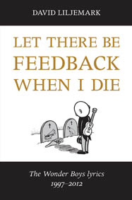
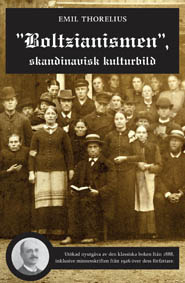
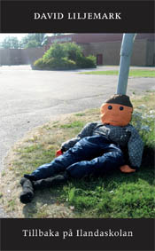

Dayw books
book releases

David Liljemark:
Let There Be Feedback When I Die; The Wonder Boys lyrics 1997-2012
Language: English
Place your order HERE (or, if you need to, get in touch with us)
Released 26 June 2014
Dayw books 001
ISBN 978-91-981944-0-1
Let There Be Feedback When I Die collects David Liljemark's lyrics 1997-2012 for his band The Wonder Boys. In 1999, The Wonder Boys released their first album and set off for a ''wonderful, new start'' - although very much out of the limelight, despite being hailed as a work of genius in the underground press. Named after The Kinks' song Wonderboy, a favourite of John Lennon's, The Wonder Boys have since amassed a large body of work in a variety of styles and subject matter. Songs like New Start, But When I'm Drunk I Want You Back, Alströmer Disco, A Gift I Never Had, The Night When The Losers Won, You Bring Out My Good Sides, Remarried Divorcees, Ad Hoc Lovers, Satan's Death Waltz - you'll find the lyrics to them all in this book.
David Liljemark was born 1973 in Karlstad, Sweden. He is an acclaimed comics artist (Susanna & Bo, Boltzius, Ritman Katz & Mannen med Påskö-ansiktet), author (Orkestern, Dä ha satt säj på hôvve) and filmmaker (Jakten på Bernhard/Traces of Bernhard, Horst - munspelskungen, Tillbaka på Ilandaskolan), and also the main driving force and lyricist for the underground rock band The Wonder Boys. He has also played with the bands Slöphead, Sugar Daddy and Endless Smile, and lives in Stockholm since 1999.

Emil Thorelius:
"Boltzianismen", skandinavisk kulturbild; Utökad nyutgåva
Språk: Svenska
Beställ HÄR (eller kontakta oss, vid ev. behov)
Utgivningsdatum: 1 aug 2014
Dayw books 002
ISBN 978-91-981944-1-8
I mitten på 1880-talet spreds fantastiska rykten i alla samhällsklasser om gudomliga mirakel som skulle ha skett genom den bibelfanatiske särlingen F. A. Boltzius' böner och oljesmörjningar. Blinda, döva och lama påstods ha blivit botade på detta sätt - men uppgifterna stämde inte alls med verkligheten. Bland de som höjde sina kritiska röster till sanningens försvar märktes särskilt läkarstudenten Emil Thorelius (1859-1921), som granskade saken allra utförligast i sin bok ''Boltzianismen'', skandinavisk kulturbild (1888). Än idag finns människor som omhuldar myterna kring Boltzius, och bokens kritik har bäring även på senare tiders helandepredikanter och sekter där fanatisk övertro och grupptryck gör att många utsatta personer skuldbeläggs för sin ''bristande tro'' och far ytterligare illa.
I denna nyutgåva ingår även den minnesskrift som gjordes över dr Emil Thorelius 1926. Den vittnar om en stor personlighet, intressant och komplex, både varmt barmhärtig i egenskap av självuppoffrande läkare och intensivt stridslysten i debatter och rättsliga strider. Han lämnade många avtryck efter sig, varav dessa kan betraktas som en introduktion. Med ett nyskrivet förord av David Liljemark.

David Liljemark: Tillbaka på Ilandaskolan
Språk: Svenska
Beställ HÄR (eller kontakta oss, vid ev. behov)
Utgivningsdatum: 16 okt 2014
Dayw books 003
ISBN 978-91-981944-2-5
"Du ä så jävla ful! Alle här hater däj! Du är fullständigt värdelös! Stygge jävla missfoster! Du ska stötes ut! Du får inte va mä! Köm hit ska ja sparke in ponga pårräj! Ja ska pesse pårräj, ska ja! Du ska knäckes för livet! Griner du nu? Fan va gött! Skrik då din jävel! Jävla snorgärs! Jävla snorgärs!"
David Liljemarks kortfilm "Tillbaka på Ilandaskolan" var en skarp och mångtydig uppgörelse med mobbningens inferno. Denna bok innehåller hela den skoningslösa monologen från filmen.
David Liljemark (född i Karlstad 1973) är serietecknare, författare, musiker, kortfilmsregissör och konstnär. Han bokdebuterade 1996 med serieboken "Inte ett rätt" och har sedan dess bland annat gjort "Susanna & Bo" (1999, 2002 & deluxeutgåva 2014), "Boltzius" (2009; dramadokumentär serieroman och kulturhistorisk faktabok i ett), "Dä ha satt säj på hôvve" (2012; novellsamling på värmländska) och dokumentärfilmen "Jakten på Bernhard" (2010; dvd med extramaterial 2011). 2014 utnämndes David Liljemark till Årets värmlandsförfattare. Han har varit musikaliskt aktiv i band som till exempel Slöphead, Sugar Daddy och The Wonder Boys.
Recensioner:
"Filmen och dess monolog – på bredaste dialekt – beskriver ett svårt fall av mobbning. En kanske alltför djärv gissning är att den som mobbas heter David Liljemark. Men oavsett den mobbades identitet är texthäftet en allmängiltig och 30-sidig beskrivning av ett helvete många har upplevt och upplever. Lärare, skolledare och ansvariga politiker har många gånger inte mycket att sätta emot vardagliga trakasserier av det slag David Liljemark beskriver. Lagen står visserligen på den mobbade skolelevens sida. Men direktingripande till stöd för en plågad ung människa kräver både empati och civilkurage. Mängden inrapporterade fall av mobbning är så stor att just mod och medkänsla tycks saknas på en del skolor. Kanske var det så på Ilandaskolan under den senare hälften av 1980-talet? [---]
Monologtexten är iskall, grym och kränkande: 'Sitter du här å griner igen? Jävlar va gôtt.' Den som för ordet är naturligtvis skolans mästermobbare. Den som drabbas och sitter och gråter är en utsatt stackare, hjälplös och i avsaknad av vuxenvärldens stöd. Men citatet ovan är ändå ett av de mjukare, det finns gott om de som är värre i David Liljemarks monologtext: 'Du ä skyldig mänskligheten miljarders biljoner, för psykiskt lidande av å behöve se däj. Å nu har dä gått te inkasso. En ren sopa å nu trycker vi ôpp däj mot väggen igen sörrö, nu blir dä knät i pongen igen!'
Tillbaka på Ilandaskolan är en mycket obehaglig text. Den beskriver situationer som alltför många är alltför välbekanta med. Och just därför bör texthäftet tryckas i en kommunalt sponsrad jätteupplaga och delas ut till varje skolelev och varje lärare, varje rektor och skolpolitiker. Kanske bidrar texten på så sätt till en sorts förbättring. Kanske."
- Mats Dahlberg, NWT 30 okt 2014
”Denna lilla skrift innehåller det största antalet tillmälen jag någonsin skådat mellan två bokpärmar! Att läsa den har varit ett rent lidande, men samtidigt måste man lite beundra mobbarnas uppfinningsrikedom vad det gäller bokstavligen dödliga tillmälen och hotelser. Att förövarna talar värmlandsmål gör dem alls inte mysigare! David Liljemark, framstående serietecknare, filmare m.m. uppväxt i Skåre, skriver i boken att han själv gick högstadiet på Ilandaskolan 1986–1989 – men kunde verkligen samtalstonen mellan skolungdomarna ha varit så till den milda grad rå? Här har nog författaren begagnat sig av författarens rätt till licentia poetica. Han försäkrar att han själv inte var utsatt för mobbning, men blivit retad. På bokomslaget kan man läsa att han gjort en film med samma namn och han kallar den – inte utan skäl förvisso – för en skarp och mångtydig uppgörelse med mobbningens inferno: ”Boken innehåller hela den skoningslösa monologen från filmen.” Mobbarna talar som sagt på mål men språket lägger föga hinder för läsandet – faktiskt!”
- Bengt Åkerblom, Wermlandiana 4/2014